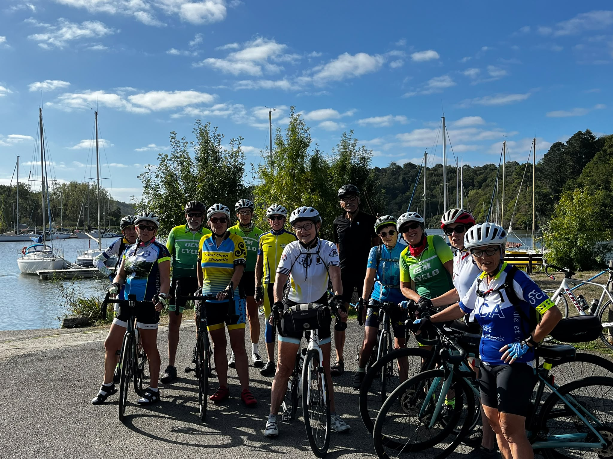
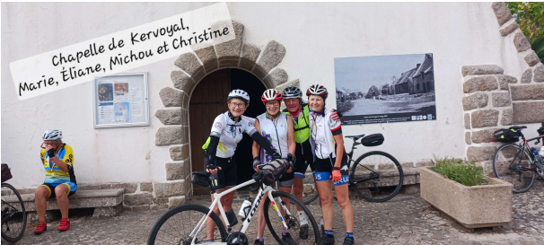

Séjour CODEP 35 : un week-end à vélo dans le Morbihan
Deux journées de découverte sur les petites routes du Morbihan, entre cités de caractère, campagne vallonnée et littoral, sous un soleil qui nous a accompagnés tout le week-end.
Samedi : entre campagne morbihannaise et petites cités de caractère
Le samedi, trois circuits de 65, 85 ou 102 km étaient proposés en direction de la campagne morbihannaise, avec des côtes à souhait. Ils nous ont permis de découvrir ou redécouvrir de petites cités de caractère, comme Rochefort-en-Terre ou Questembert, avec ses halles impressionnantes : les plus imposantes de Bretagne, longues de 55 m, soutenues par 84 piliers et couvertes d’une toiture de 1 180 m². Elles sont classées au titre des Monuments historiques.
Nous sommes également passés à Béganne, qui sera certainement un lieu de ravitaillement, selon les dires du président du CODEP, lors de la prochaine Semaine fédérale de Redon en 2027.
Nous avons aussi pu faire une halte au port de Folleux, un site très agréable, surtout sous le soleil qui nous a accompagnés tout le week-end.

Dimanche : cap sur Damgan et la côte
Dimanche, nous partons avec le pique-nique préparé par l’Auberge, pour un parcours d’une centaine de kilomètres vers la mer, en direction de Damgan.
Le brouillard s’estompe rapidement, le temps de nous échauffer dans la côte pour rejoindre Limerzel. Nous arrivons à Péaule, puis Marzan, Arzal (le bourg et non le barrage), Muzillac, et prenons la direction de Damgan.
Marie, la régionale de l’étape, nous fait découvrir la chapelle de Kervoyal. Cela tombe bien : elle est ouverte pour les Journées du patrimoine ! Sa particularité est son plafond en bois en forme de barque inversée ; ses petits vitraux colorés sont également très jolis.

Nous retrouvons d’autres cyclos pour pique-niquer en bord de mer, puis découvrons la pointe de Pénerf, son port, sa chapelle et son ancien village de pêcheurs. Depuis le port, un bateau « passeur » propose la traversée entre Pénerf et la cale de Pencadénic, au Tour-du-Parc.
Une dernière halte à la chapelle Sainte-Suzanne, où des animations sont organisées pour les Journées du patrimoine. Quelques-unes en profitent pour acheter des crêpes et se rafraîchir à la buvette. Il nous reste 6 km pour rejoindre le domaine du Moulin Neuf et clore ce séjour.
Le plaisir de rouler et de partager
Il est toujours intéressant de rencontrer des cyclos d’autres clubs : on a toujours à apprendre et à échanger. Découvrir de nouvelles petites routes, finalement pas si loin de Bruz, et rouler ensemble reste un plaisir partagé !